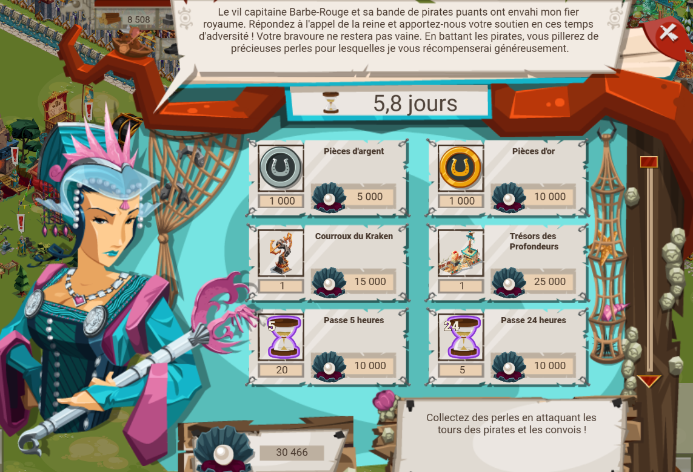
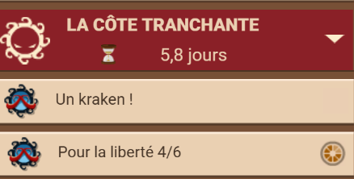
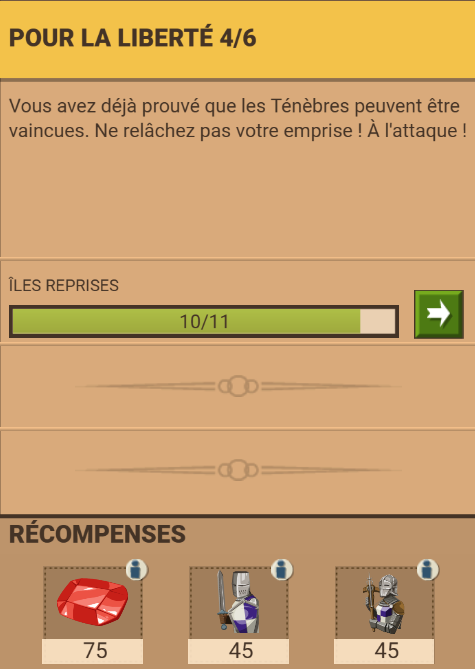
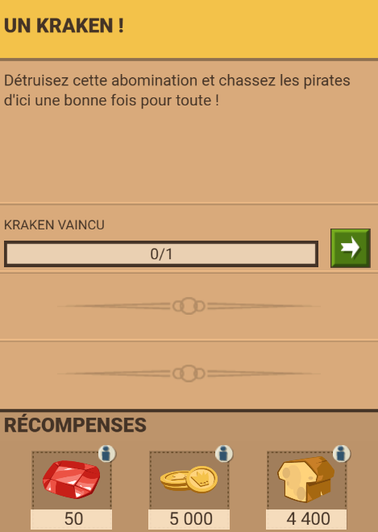
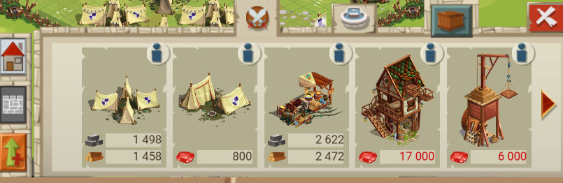
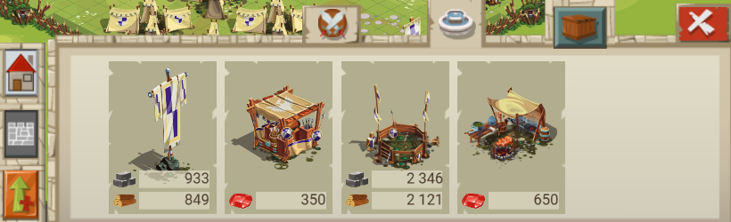
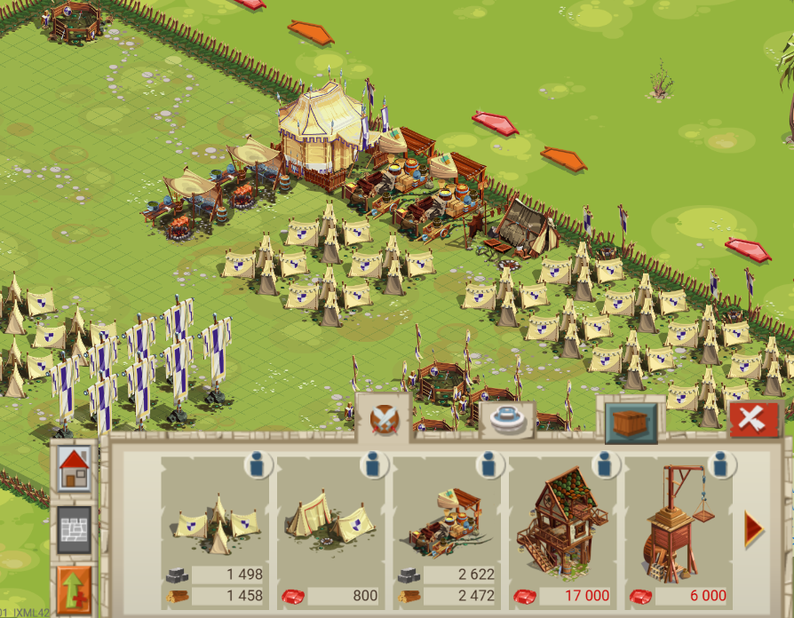
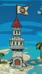

Côte tranchante

Présentation
La côte tranchante est un évènement qui dure environ 6 jours. Pour les plus anciens, il est sur certains points comparable à celui de l'abîme ou du roi torturé. Comme d'autres event (RE, Lacis, Bérimond) la côte tranchante a son propre royaume. L'event le plus proche serait celui de Bérimond : il y a le camp de la côte tranchante, avec à peu près les mêmes bâtiments et fonctionnement (camp avec possibilité d'extension, ordre public, conso bouffe). Il y a aussi la possibilté de choisir en plusieurs types de camps (simple-moyen-ruru). La grosse différence est que le camp de la côte tranchante ne produit que 200 bouffe/h et aucune ressource, et est propre à chaques joueurs, donc pas d'interaction et attaques pvp possibles. Pour consrtuire le camp et améliorer le bateau, il faut envoyer des ressources depuis les autres royaumes.
Le but est d'aider la reine à reprendre la main sur son royaume, pillé et contrôlé par le pirate barbe-rouge, en abbatant la pièce maîtresse de son emprise : le kraken. Pour ce faire, il faut vaincre des tours pour accéder u kraken et le vaincre. Si le kraken n'est pas vaincu dans le temps imparti (6 jours), les troupes de l'eve sont transférées au cp du grand empire.
Pourquoi ?

Récompenses

Quêtes


Apparence

Bâtiments militaires
- petites tentes
- grandes tentes
- Entrepôt à provisions
- Quartier du constructeur
- Engin de levage
- camp du chasseur

Menu des décorations
- Bannière
- Arsenal
- Terrain d'entraînement
- Cuisine de campagne

Aperçu du camp
Attaque
Comme precisé dans la présentation, il faut aattaquer les tours (pas forcément toutes) pour accéder au kraken et le vaincre. Pour le niveau "simple", pas besoin de mettre des engins, juste les 290 soso suffisent en temps normal. Dès le niveau Maître 1 (donc Maître 2 aussi) il FAUT placer des engins (beffrois-bélier fortifié-mur de boucliers). Pour les convois, avoir BEAUCOUP de soso est suffisant normalement.
Avant de lancer une attaque, vérifier qu'il y a moins de soso sur les flancs que le maximum.

tour
convoi pirate
En pratique
Au niveau maximum (81), une attaque sur fieffé coquin donne ce rc (rpport de combat)
P-S : maraudeur actif (+90% de butin)